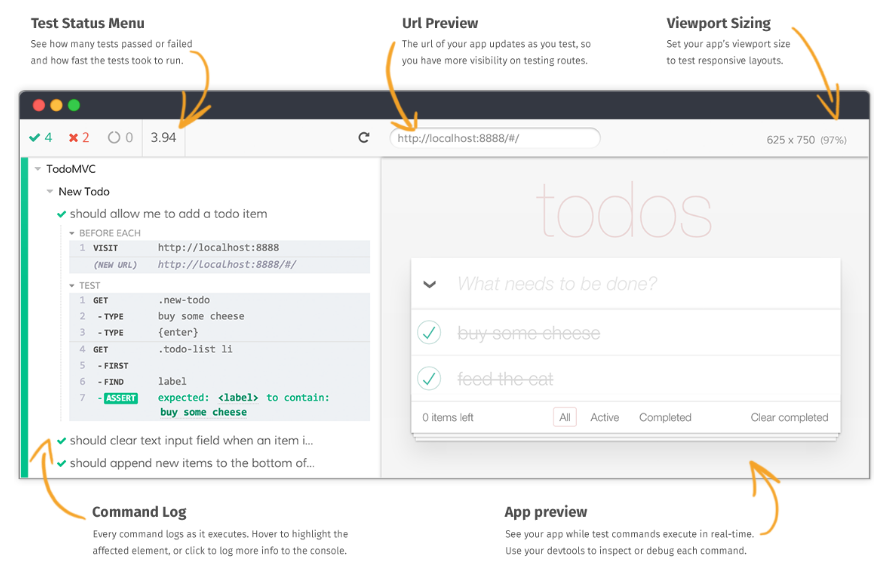

Advantages of cypress
- no licence costs (MIT): open source
- great community (9000 stars, 78 contributors)
- extremely robust: no need for waits, scrollIntoView, check for visbility, existence...
- very fast test execution (in headless mode)
Advantages of cypress (2)
Great testrunner

Advantages of cypress (3)
- testrunner is awesome for finding selectors, debugging, time travelling or simply watching your tests run
- cypress is independent from any web frameworks -> works with every webapp
- can create screenshots or videos
- runs on ci
Advantages of cypress (4)
Stubbing network requests
cy.server();
cy.route({
method: 'GET',
url: '/api/message/**',
status: 404,
response: {}
});
cy.get('#openMessage').click();
cy.get('#notFoundErrorToast').should('exist');
cy.server({enable: false});
cy.get('#openMessage').click();
cy.get('#notFoundErrorToast').should('not.exist');
Advantages of cypress (5)
Easy to write tests, in JavaScript or TypeScript
describe('the login', () => {
it('should work for a dummy user', () => {
cy.visit('myUrl');
cy.get('#uNameInput').type('dummy');
cy.get('#pwInput').type('dummyPw');
cy.get('#btnSubmit').click();
cy.get('#customerMenu').click();
});
});
Usage of page object pattern
it('should go through in german', () => {
const firstPage = app.start()
.validateInfotext()
.clickNext()
.validateRequiredValildationsWorking()
.fillRestOfForm();
const secondPage = firstPage.proceedToNextPage()
.clickNext()
.validateRequiredErrors()
.enterStreetAndNumber()
.enterEmail()
.enterPhoneNumber();
});